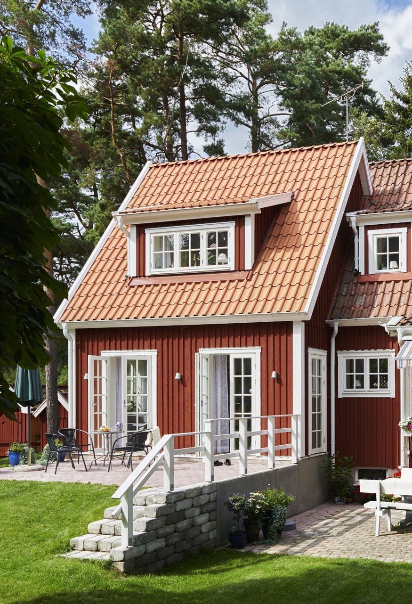

Professionell kulörrådgivning för ditt hem — inomhus och utomhus
Rätt färg kan göra allt — eller förstöra allt. Oavsett om du renoverar ett helt hus, målar fasaden eller bara vill uppdatera ett rum, är det viktigt att välja färger som både passar ditt hem och står prov på tid.

Vi erbjuder två tjänster inom färgsättning:
Vår expert hjälper dig välja rätt färg för varje vägg, rum och väderstreck. Vi tar hänsyn till:
Vi inspekterar din husfasad och ger professionella rekommendationer för färgval, skick och underhåll. Viktigt särskilt när du funderar på fasadrenovering eller målararbete.
Boka en tid idag för att prata med vår expert om ditt projekt. Vi har lång erfarenhet och kan ge dig säker vägledning genom hela processen.
Rätt färg vid rätt tid gör all skillnad.Värmdö Färgbod, Färgsättning
Färgsättning passar för många projekt
Du planerar en större renovering eller uppdatering — från nya golv och väggfärg till ny möblering. Vi hjälper dig välja färg som passar det nya uttrycket.
Vi arbetar gärna med byggare och arkitekter för att säkerställa att färgval och material fungerar tillsammans perfekt.
Håller du på med fasadrenovering och undrar vilken färg som passar ditt hus? Vi inspekterar och ger rekommendationer.
Fyra enkla steg till rätt färg
Berätta om ditt projekt — vilka rum, vilken stil, vilken budget du tänker dig.
Vi diskuterar dina önskemål och planerar färgsättningen tillsammans.
Vi presenterar färgförslag och testar dem mot ditt hem och ljuset.
Du köper färgen från oss och börjar måla — eller hyr en målare. Vi stöttar dig genom processen.
Kontakta oss för att boka en konsultation. Vi är här för att guida dig genom färgvalet och säkerställa att ditt projekt blir en succé.
Boka färgsättning